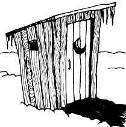
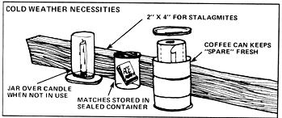
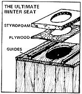

Here, from a resident of British Columbia's far northwest corner, is a Compleat Survival Manual for the Pilgrim Facing His or Her First Winter With a Privy. And for all you folks with indoor plumbing: Rejoice, rejoice!
Regardless of what anyone says, there is one advantage to having an outhouse in the colder regions of our land: Namely, you don't have to worry about frozen plumbing. The prospect of actually having to use an outdoor potty at thirty below, however, is horrifying to most folks. (It's enough, in fact, to throw the average tenderuh-foot's body functions completely out of whack!) A recent arrival from wanner climes even confided to my lady that she dreaded the possibility of having to present a strategically located frostbite for treatment at the local outpost hospital.
And yet, a trip to the arctic or subarctic biffy doesn't have to be an exercise in stark terror: You can overcome most of the inconveniences, if you know how.
SEAT TEMPERATURE The temperature of the outdoor commode's load-bearing surface is our most immediate concern. Imagine-if you dare-the sensory and emotional impact of sitting on a seat forty degrees colder than the average ice cube . . . a frost-caked surface cold enough to freeze water instantly with an audible crackle. One way to ease this "impact"-as suggested in MOTHER NO. 31-is simply to hang the john's seat behind the kitchen stove when the lid is not in use, and then take it with you when you go to use "the facilities". The idea works, too . . . though fastidious sorts aren't usually too pleased with the idea. And, if you have small kiddies who are still developing dexterity and accuracy, the concept further lacks appeal.
Then again, you may want to try a technique I first spotted at a ranch near McKinley Park in Alaska. The rancher there had obtained a horseshoe-shaped seat (such as commonly found in public restrooms) and pulled an old woolen sock over each half of the lid. It was marvelous.
The absolute ultimate, though (believe it or not), is the styrofoam seat. (OK. So it's plastic. Can you think of a better use for plastics?) Such a lid is a snap to make: All you have to do is [1] find a two-foot-square hunk of 2"-thick insulating styrofoam (or any piece big enough to extend well beyond the edges of the privy's opening), [2] outline the hole in the latrine on it, and [3] cut the center out of the block with a keyhole saw. (The seat's usable "as is", but does tend to break easily unless reinforced. Hence, you might like to cement the foam to a scrap piece of plywood that's been cut to size.) Tack a couple of blocks to the outhouse bench's top to keep the new seat from sliding around, and presto! You've got an insulated perch you can slide into place whenever the frost fiends are sufficiently vicious.
This-I guarantee-is the warmest and most comfortable seat you can imagine (even if you forget and leave it out in the snow on a night when the temperature plunges to fifty below). It feels heated, as though there's an electric element inside! With a foam lid like this, you no longer need fear discomfort or moon-shaped frostbites.
(You might even want to build the next loo facing north, so you can leave the door open and admire the aurora borealis in comfort, as you peer out from between your styrofoam foundation and down parka.)
A lesser-but still significant-problem associated with an outhouse up here in the far north is the frost that sometimes builds up inside the structure. It can make the interior of the building utterly beautiful when it coats walls and ceiling with thick layers of giant, iridescent crystals and transforms each cobweb into a long, swaying strand of gems.
Your appreciation of the aesthetics of the situation generally vanishes quickly, however, when you realize that the source of all this sparkling beauty is the . . . vapor . . . . from . . . . . the . . . . . . pit. Then too, the crystals are so fragile that the mere closing of the door can jar loose a tinkling snowstorm that-if nothing else-is sure to cover you liberally. (Even if you use the utmost stealth and reach your destination without causing the slightest structural vibration, you may still be confounded as the vapor of your own breath adds the final milli-microgram needed to touch off an avalanche from the heavily laden cobweb hanging directly above the back of your neck! It raises hell with meditation.)
You won't be able to lick the frost problem entirely. About the best you can do is [1] leave a tight, flat cover on the opening in your Chic Sale's bench when it's not in use to prevent vapors from rising into the building, and [2] prop the privy's door open during warm spells so that the crystals can vaporize and be wafted away. (If the cold snap is prolonged enough to fill your outhouse with frost anyway, just bang the structure on the outside with your fist before you enter. This'll knock loose any storms which hang in wait. Then you can ignore the source of the crystals as you settle down inside and pretend you're in a geode. It's pretty, anyway.)
A cold-weather phenomenon that's unheard-of except in the north is the Outhouse Stalagmite, a sharp and slender spire that grows with amazing speed from the darkness of the pit and quickly threatens to violate the upper sanctum. This problem you fight with violence.
Inside an outhouse at a station on the Canol Road in the Northwest Territories there's an immense, cavemantype club resting in a corner under a sign that reads
In this land of ice and snow
The refuse pile just grows and grows
But lo, behold this mighty club
With which to smite it in the bud!
Chances are, you'll find an old two-by-four leaning against most far north outhouses during the winter. Now you know why. The stalagmites become brittle when frozen and are easily fractured. In short, they're no real threat. (Just don't forget and use that same two-by in the construction of your sauna next spring!)
Many northerners make an effort to keep their biffies bright and cheery with colorful paint, pictures, and a candle for light. If you decide to install such a light in your outhouse, though, make it short enough to cover with an inverted jar when it's not in use (to prevent the candle from becoming heavily frosted and difficult to light). Matches, too, must be kept in a sealed container, and that extra roll of tissue should be tightly shut inside a coffee can so that it doesn't get soggy.
Don't forget to latch your outhouse door on windy nights so the building doesn't drift full of snow. This'll also help to keep out porcupines, who seem to have a passion for the salts found on biffy benches. While porky visits are more commonly a summer occurrence, I did once notice-just in time, I might add-one of the spiny critters inside the shallow pit of an old privy out in the bush. (The incident had all kinds of frightening potential!)
That about covers the major annoyances associated with the sub-zero outhouse. Other winter privy problems fade into the background, once you have these solved.
In any case, the minor inconveniences posed by frozen facilities are nothing (in my mind) compared to the hazards "faced" by those who use the outhouse in some southern states . . . states where easily offended black widow spiders frequently hang just under the seat. I'll take porcupines, any day.
|
 |
 |
 |